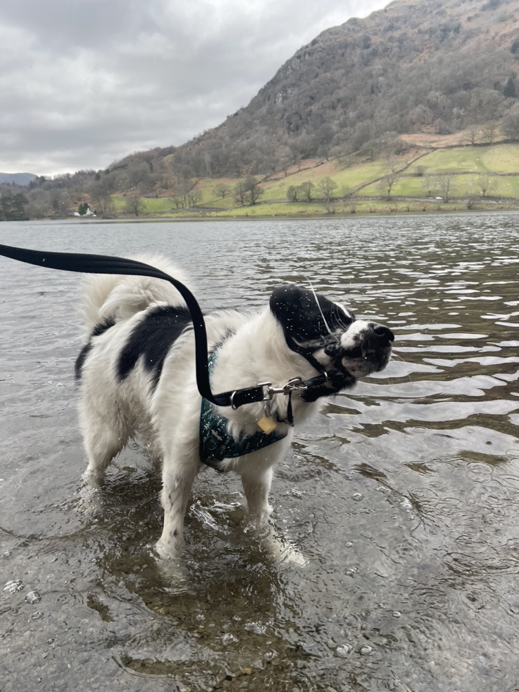
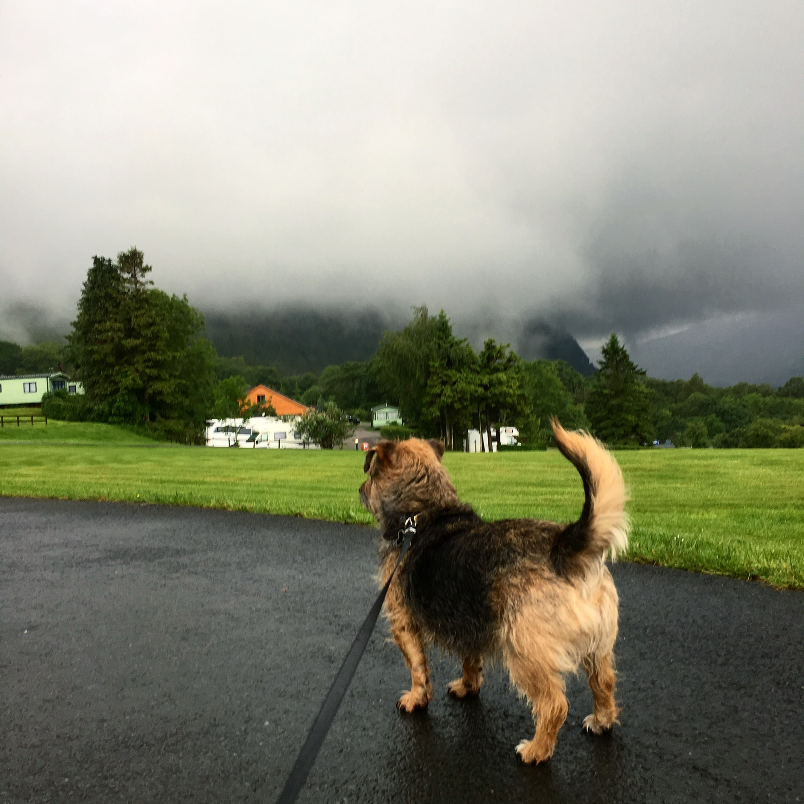

This was one of Mooses first "big" walks. Whether we're kayaking on rydal water, or exploring the nearby fells, it's always a lovely day out.
Here is a link to the actual walk!
Our first holiday and it rained! It will always be a special place to go back to, and I love waking up to the surrounding view out of our little tent. Exploring the markets, playing cards, and drinking beer whilst the rain hammers your tent; theres actually nothing else I'd rather do
